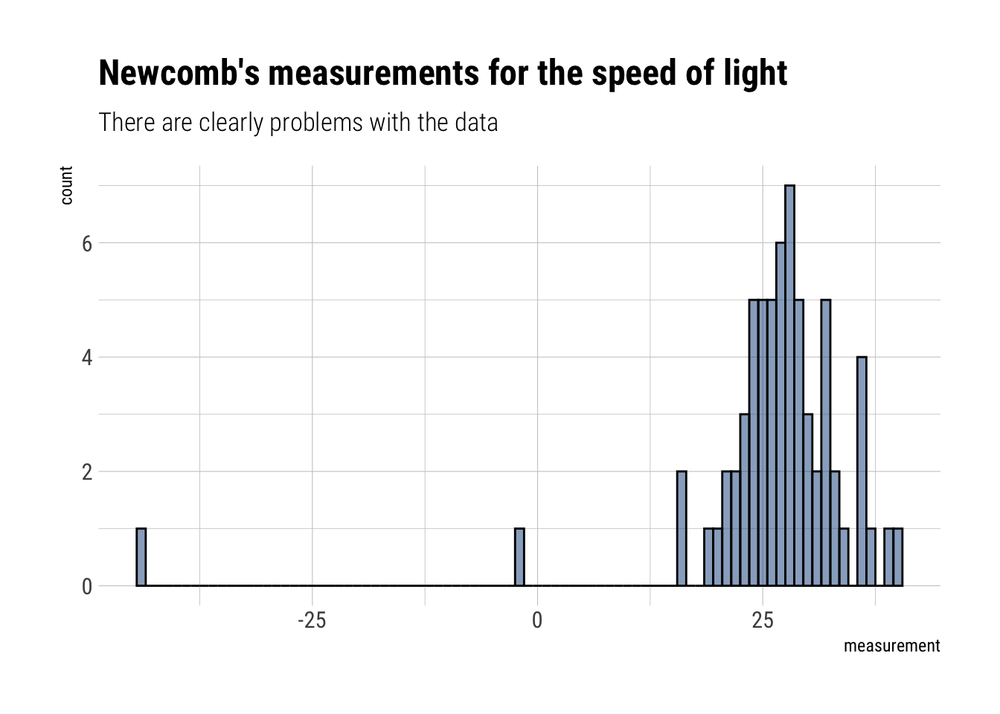

Bayesian Data Analysis: Week 3 -> Fitting a Gaussian probability model
Published
June 24, 2020
Bayesian Data Analysis (Gelman, Vehtari et. alter) is equals part a great introduction and THE reference for advanced Bayesian Statistics. Luckily, it’s freely available online. To make things even better for the online learner, Aki Vehtari (one of the authors) has a set of online lectures and homeworks that go through the basics of Bayesian Data Analysis.
Instead of going through the homeworks (due to the fear of ruining the fun for future students of Aki’s), I’ll go through some of the examples of the book as case studies. In this blogpost, I’ll (wrongly) estimate the speed of light from the measurements of Simon Newcomb’s 1882 experiments.
The Gaussian Probability model
When fitting a Gaussian probability model, there are to parameters to estimate: \(\mu, \sigma\). Therefore, we arrive at a joint posterior distribution:
\[
y | \mu, \sigma^2 \sim N(\mu, \sigma^2) \\
p(\mu, \sigma | y) \propto p (y | \mu, \sigma) p(\mu, \sigma)
\] In this case, \(\sigma\) is a nuisance parameter: we are only really interested in knowing \(\mu\). The following we assume the non-informative prior:
\[
p(\mu, \sigma^2) \propto (\sigma^2)^{-1}
\]
Posterior marginal of sigma
We can show that the marginal posterior distribution for \(\sigma\) is:
\[
\sigma^2 | y \sim Inv -\chi^2 (n - 1, s^2)
\] Where \(s^2\) is the sample variance of the \(y_i\)’s.
Marginal Conditional posterior for mu
Then:
\[
\mu | \sigma^2, y \sim N(\bar y, \sigma^2 / n)
\] > The posterior distribution of \(\mu\) can be regarded as a mixture of normal distributions, mixed over the scaled inverse \(\chi^2\) distribution for the variance, \(\sigma^2\).
Marginal posterior for mu
\[
\dfrac{\mu - \bar y}{s/\sqrt{n}} | y \sim t_{n-1}
\]
Which has a nice correspondence with the distribution used for the mean estimator in frequentist statistics in the case of small samples.
## Fitting it with data
Then, let’s read the measurements from Newcomb’s experiment:
read_delim("http://www.stat.columbia.edu/~gelman/book/data/light.asc", delim =" ", skip =3,col_names = F) %>%pivot_longer(everything()) %>%select(value) %>%drop_na()-> measurementsmeasurements %>%ggplot(aes(value)) +geom_histogram(binwidth =1, color ="black", fill ="dodgerblue4", alpha =0.5) +labs(title ="Newcomb's measurements for the speed of light",subtitle ="There are clearly problems with the data",x ="measurement")

There are clearly some problems with the data. Garbage in, garbage out.
Marginal for sigma
We therefore can derive the marginal distribution for \(\sigma\):
measurements%>% skimr::skim()
Data summary
Name
Piped data
Number of rows
66
Number of columns
1
_______________________
Column type frequency:
numeric
1
________________________
Group variables
None
Variable type: numeric
skim_variable
n_missing
complete_rate
mean
sd
p0
p25
p50
p75
p100
hist
value
0
1
26.21
10.75
-44
24
27
30.75
40
▁▁▁▂▇
Thus:
\[
\sigma^2 | y \sim Inv -\chi^2 (65, 10.7^2)
\]
Whereas for mu we have :
\[
\dfrac{\mu - 26.2}{10.7/\sqrt{66}} | y \sim t_{n-1}
\] In code:
data.frame(mu_draw) %>%ggplot(aes(mu_draw)) +geom_histogram(binwidth =0.1, color ="black", fill ="dodgerblue4", alpha =0.5) +geom_vline(aes(xintercept = lower), color ="red", linetype =2) +geom_vline(aes(xintercept = upper), color ="red", linetype =2) +geom_vline(aes(xintercept =33), color ="black", linetype =1) +labs(title ="Speed of light: Posterior draws for mu",subtitle ="Contemporary estimates for the speed of light in the experiment is 33. Garbage in, garbage...")